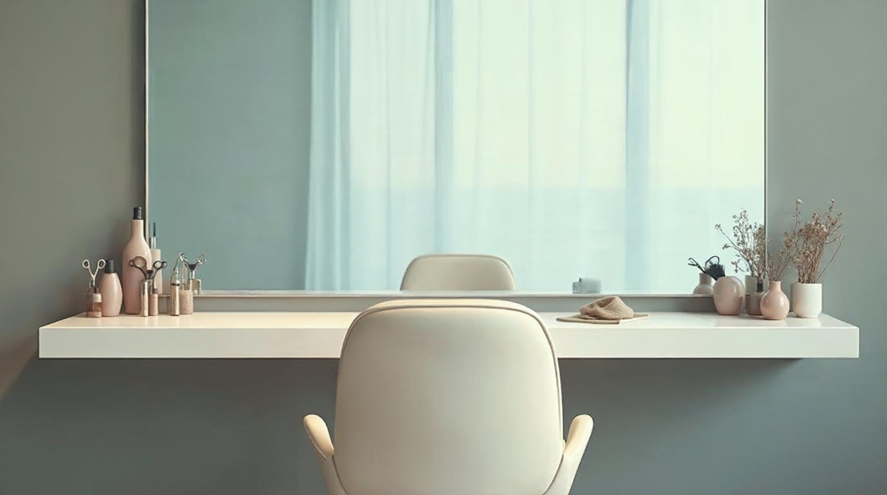
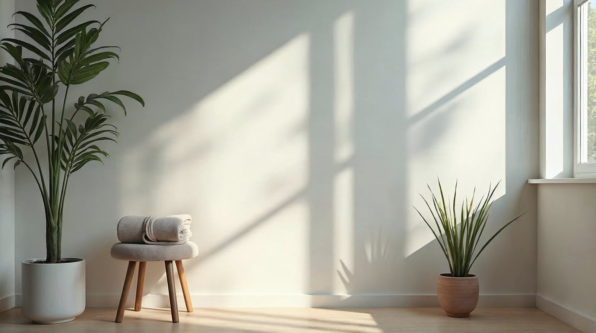
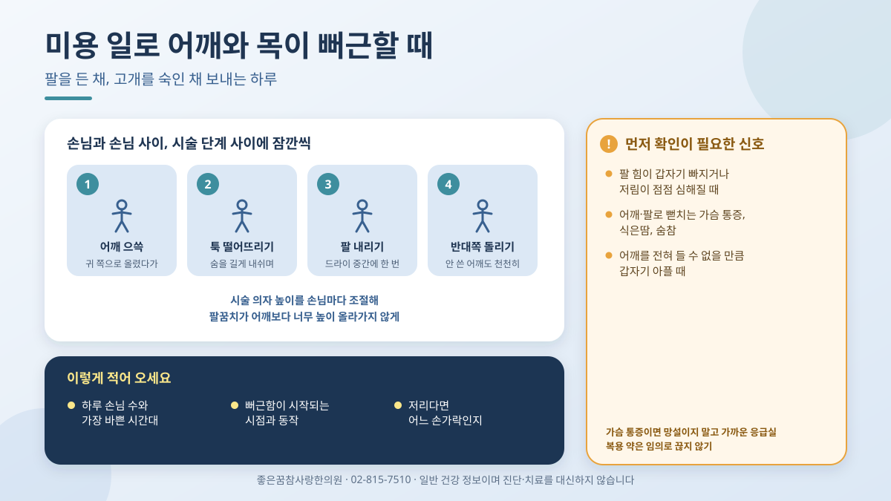

이종호 한의사 감수좋은꿈참사랑한의원 대표원장 (한의사 면허번호 19769)발행 2026-11-23 · 수정 2026-11-26
이 글의 차례
머리를 자르고 염색하고 드라이하는 동안 팔은 어깨 높이 가까이 머물고 목은 앞으로 숙여집니다. 이런 자세가 하루 종일 반복되면 퇴근 무렵 어깨가 귀 쪽으로 올라붙은 듯 뻐근해지기 쉽습니다. 쉬는 간격과 작업 높이를 조금만 바꿔도 부담을 덜 수 있는 경우가 많아, 그 방법부터 함께 살펴봅니다.
왜 이런 불편이 생길 수 있나요
- 팔을 들고 있는 동안 어깨를 끌어올리는 근육이 쉬지 못하고 계속 힘을 쓰게 됩니다.
- 손님의 머리를 내려다보며 고개를 숙이면 머리 무게를 목 뒤 근육이 버텨야 해서 뒷목이 쉽게 굳을 수 있습니다.
- 가위와 드라이어를 늘 같은 손으로 쓰면 한쪽 어깨와 손목에 부담이 몰리기 쉽습니다.
- 샴푸대에서 허리를 굽힌 채 오래 서 있으면 허리와 다리의 피로가 목과 어깨의 긴장으로 이어지기도 합니다.
- 바쁜 날에는 식사와 쉬는 시간이 밀려 몸이 회복할 틈이 줄어듭니다. 한의학에서는 이런 피로의 누적도 함께 살핍니다.
먼저 이렇게 여쭙니다
- 하루 중 언제 가장 뻐근한가요? 오전인지, 마지막 손님을 받을 때인지요.
- 주로 어느 쪽 팔을 높이 들고 일하시나요?
- 시술 의자와 거울 높이는 손님마다 바꿔 가며 쓰시나요?
- 쉬는 날에는 뻐근함이 줄어드나요, 그대로인가요?
- 팔이나 손가락이 저린 느낌도 함께 있나요?

일상에서 먼저 해 볼 수 있는 것
손님 사이 1~2분
- 어깨를 귀 쪽으로 올렸다가 툭 떨어뜨리며 숨을 길게 내쉬기를 5번 합니다.
- 거울을 보며 턱을 뒤로 살짝 당겨 뒷목을 늘린 채 5초 버티기를 5번 합니다. 고개를 숙이고 일한 시간을 반대로 돌려 주는 동작입니다.
- 가위를 쥔 손은 손가락을 쫙 폈다 쥐기를 10번 하고, 손바닥이 앞을 보게 팔을 뻗어 다른 손으로 손가락을 몸 쪽으로 가볍게 15초 당깁니다. 손목이나 팔꿈치가 아프면 억지로 당기지 않습니다.
시술하는 동안
- 시술 의자 높이를 손님마다 조절해 팔꿈치가 어깨보다 너무 높이 올라가지 않게 합니다. 커트할 때 바퀴 달린 작업 의자에 앉아 하는 시간을 섞어 보는 것도 방법입니다.
- 드라이처럼 팔을 오래 드는 작업은 중간에 팔을 한 번 내려 10초 쉬고, 가능하면 드라이어와 빗을 쥔 손을 바꿔 봅니다.
- 샴푸대에서는 한 발을 앞에 두고 무릎을 살짝 굽혀 허리 대신 다리로 높이를 맞춥니다.
점심·쉬는 시간 5분
- 끼니를 거르지 말고 앉아서 먹습니다. 먹은 뒤 양손을 등 뒤로 깍지 끼고 가슴을 편 채 20초 버티기를 2~3번 합니다.
- 문틀에 팔꿈치를 어깨 높이로 대고 몸을 앞으로 살짝 내밀어 가슴 앞쪽을 20초씩 늘립니다.
- 한쪽 팔만 쓴 날은 반대쪽 어깨도 천천히 돌려 줍니다.
퇴근 뒤 10분
- 따뜻한 물로 샤워하며 목과 어깨를 데웁니다.
- 바로 누워 수건을 돌돌 말아 목 뒤에 받치고 5분쯤 숨을 고릅니다.
- 날개뼈를 등 가운데로 모았다 풀기를 10번 하고, 고개를 좌우로 천천히 기울여 15초씩 머뭅니다. 아픈 범위까지 억지로 하지 않습니다.
상황별 예시
- 예를 들어 주말에 손님이 몰리는 미용실의 디자이너가 일요일 저녁마다 오른쪽 어깨가 귀 쪽으로 올라붙은 느낌이 든다면, 손님 사이 1분 어깨 내리기와 드라이 중간 팔 내리기를 2주 해 보며 일요일 저녁 뻐근함을 0~10점으로 적어 봅니다.
- 예를 들어 일을 배우는 중인 스태프가 하루 종일 샴푸와 드라이를 맡아 목과 허리가 함께 뻐근하다면, 샴푸대에서 한 발을 앞에 두는 자세와 점심을 앉아서 먹는 것부터 바꿔 봅니다.
- 예를 들어 오래 일해 온 디자이너가 어깨 뻐근함에 더해 손가락 끝이 저리기 시작했다면, 저린 손가락과 밤에 깨는지를 적어 오시면 목에서 오는지 손목에서 오는지 가늠하는 데 참고가 됩니다.
스스로 점검해 보세요
- 퇴근 무렵 어깨가 귀 쪽으로 올라붙은 느낌이 일주일에 세 번 이상 든다.
- 손님 사이에도 팔을 내리고 쉬는 틈이 거의 없다.
- 가위나 드라이어를 쥐는 쪽 어깨만 유난히 뻐근하다.
- 쉬는 날 하루를 쉬어도 뻐근함이 그대로다.
- 고개를 돌리거나 위를 볼 때 뒷목이 걸린다.
- 손가락이 저리거나 밤에 팔이 저려 깬 적이 있다.
- 점심을 거르거나 서서 급하게 먹는 날이 많다.
비슷해 보이는 불편과 어떻게 구분하나요?
어깨와 목이 뻐근하다는 말 안에는 여러 갈래가 섞여 있습니다. 같은 미용 일을 해도 어디서 시작된 불편인지에 따라 쉬는 방법과 살필 곳이 달라져서, 처음 상담할 때 이 부분을 자세히 여쭙습니다.
- 근육이 지친 뻐근함: 하루 일을 마칠수록 심해지고, 쉬는 날이나 따뜻하게 씻은 뒤에는 덜해지는 흐름이 많습니다. 누르면 넓게 뭉친 느낌이 듭니다.
- 목에서 팔로 내려오는 저림: 고개를 뒤로 젖히거나 아픈 쪽으로 기울일 때 팔이나 손가락으로 찌릿함이 퍼집니다. 저린 손가락이 늘 비슷한 쪽이라는 점이 실마리가 됩니다.
- 손목 쪽에서 오는 저림: 가위질을 오래 한 날 엄지·검지·중지 쪽이 저리고, 새벽에 손을 털어야 할 만큼 저려 깨는 경우가 있습니다.
- 어깨 힘줄 쪽 불편: 팔을 옆으로 들어 올리다 어깨 높이 근처에서 걸리거나, 아픈 쪽으로 누우면 쑤시는 양상이 많습니다.
여러 갈래가 함께 있는 분도 적지 않습니다. 그래서 어느 하나로 단정하기보다, 어떤 동작에서 어디가 먼저 불편해지는지를 순서대로 짚어 보는 것이 출발점입니다.
왜 쉬는 날에도 뻐근함이 남을 수 있을까요
하루를 쉬었는데도 어깨가 풀리지 않으면 실망하는 분이 많습니다. 몇 달 동안 같은 자세가 쌓이면 근육이 긴장을 놓는 법을 잊은 것처럼 굳어 있어서, 하루 쉬는 것만으로는 다 풀리지 않는 경우가 있습니다.
쉬는 날 오히려 밀린 집안일이나 아이 돌보기로 팔을 계속 쓰는 경우도 많습니다. 휴무일에 소파에서 고개를 숙이고 휴대폰을 오래 보면, 일할 때와 비슷한 목 자세가 하루 더 이어지는 셈입니다.
잠도 함께 봅니다. 늦게까지 일하고 늦게 자는 날이 이어지면 몸이 회복할 시간이 줄어, 같은 뻐근함도 더 크게 느껴질 수 있습니다.
작업 도구와 환경도 함께 점검해 보세요
- 드라이어를 쥐었을 때 손목이 꺾이지 않는지, 줄이 팔을 아래로 잡아당기지 않는지 확인합니다. 줄을 어깨 너머로 걸치기만 해도 팔이 덜 끌려가는 분이 있습니다.
- 가위는 손가락 구멍이 손에 맞는지 봅니다. 너무 크거나 작으면 쥐는 힘을 더 쓰게 되고, 엄지 쪽에 부담이 몰리기 쉽습니다.
- 바닥이 딱딱하다면 쿠션이 있는 신발을 신고, 한 자리에 오래 서는 날에는 체중을 양발에 번갈아 싣습니다.
- 거울과 손님 의자 사이가 좁으면 몸을 비틀며 일하게 되니, 동선을 한 번 넓혀 봅니다.
도구를 바꾸기 어렵다면 쥐는 힘부터 살펴보세요. 가위를 쥔 손에서 힘을 조금 덜어 낸다는 느낌으로 쥐어 보고, 손목에서 어깨까지 이어지는 긴장이 어떻게 다른지 스스로 견주어 보시면 됩니다.
출근 전 5분, 몸을 먼저 깨워 두면 어떨까요?
첫 손님을 받기 전에 몸이 덜 풀린 채 팔을 들기 시작하면, 오전부터 어깨가 빨리 굳기 쉽습니다. 출근 직후 5분만 몸을 데우는 시간을 두어 보세요.
- 팔을 앞뒤로 크게 천천히 돌리기를 10번씩 합니다.
- 양손을 깍지 껴 머리 위로 뻗은 채 몸을 좌우로 기울여 10초씩 머뭅니다. 팔을 들 때 어깨가 걸리거나 아프면 이 동작은 건너뜁니다.
- 벽에 등을 대고 서서 뒤통수와 날개뼈가 벽에 닿는 느낌을 30초 유지합니다.
휴무일에는 30분쯤 걷기처럼 팔을 자연스럽게 흔드는 운동을 해 보세요. 일할 때와 다른 방향으로 몸을 움직이는 시간이, 하루 종일 같은 자세에 머물던 몸에 쉼표가 될 수 있습니다.
한의원에서는 어떤 치료를 어떻게 정하나요?
치료는 아픈 곳의 상태와 그날의 몸 상태를 보고 정합니다. 예를 들어 굳은 근육 쪽에는 침이나 약침을, 어깨와 목의 움직임이 한쪽으로 치우쳐 있으면 추나를, 몸이 차고 긴장이 심하면 온열 물리치료를 함께 생각해 볼 수 있습니다.
피로가 오래 쌓였고 잠과 식사까지 흐트러져 있다면 한약을 함께 상의하기도 합니다. 이때는 지금 드시는 약을 먼저 확인하고, 임신 중이거나 계획이 있다면 미리 말씀해 주셔야 산부인과와 상의할 부분을 함께 정할 수 있습니다.
치료 중 자극이나 온도가 불편하면 바로 말씀해 주세요.
이런 날은 어깨를 조금 더 아껴 주세요
- 펌이나 긴 머리 드라이처럼 팔을 오래 드는 예약이 연달아 잡힌 날
- 주말과 휴일 앞뒤로 쉬는 틈 없이 손님이 이어지는 날
- 날이 추워 매장 안에서도 어깨를 움츠리게 되는 날
- 전날 늦게 자서 아침부터 몸이 무거운 날
이런 날은 예약 사이에 1분 쉬기를 먼저 일정에 넣고, 퇴근 뒤 따뜻한 샤워와 일찍 잠들기를 챙겨 보세요. 어떤 날이 힘든지 미리 알아 두면, 어깨를 아낄 순서를 정하기가 한결 쉽습니다.

한의원에서 함께 살필 수 있는 경우
- 팔을 들고 일한 날이면 어깨와 목이 굳어 고개 돌리기가 불편한 경우 자세와 근육의 긴장을 함께 살핍니다.
- 한쪽 어깨만 유난히 올라가 있는 느낌이 드는 경우 좌우의 균형과 일하는 동작을 함께 살핍니다.
- 쉬는 날에도 뻐근함이 이어지고 잠을 자기 불편한 경우 생활 리듬과 긴장의 정도를 함께 살핍니다.
좋은꿈참사랑한의원에서는 첫 방문 때 모든 분의 맥을 먼저 짚고, 짚는 동안 하루에 받는 손님 수와 주로 하는 시술, 가위와 드라이어를 어느 손으로 쥐는지, 어떤 작업에서 어디가 불편한지를 충분히 여쭙습니다. 혀와 배도 살펴 잠과 식사, 피로가 쌓인 정도를 함께 확인합니다.
필요하다고 판단될 때 어깨를 드는 각도와 목을 돌리는 범위를 직접 움직여 보며 확인하고, 힘줄 쪽이 의심되면 초음파로 살핀 뒤 상태에 맞춰 침·약침·추나 등을 정합니다.
귀가 전에는 일터에서 해 볼 만한 쉬는 방법과 다음에 확인할 일을 알려 드리고, 다시 오시면 지난 이야기를 이어서 바쁜 주말을 보낸 뒤 어땠는지부터 여쭙고 같은 동작으로 다시 움직여 비교합니다.
얼마나 지켜보고 언제 상담할까요
- 쉬는 방법과 작업 높이를 바꾼 뒤 2주쯤 퇴근 무렵 뻐근함을 0~10점으로 적어 봅니다. 점수가 내려가는 흐름이면 그 습관을 이어 갑니다.
- 쉬는 날을 지나도 뻐근함이 그대로이거나, 2~3주가 지나도 같은 동작에서 계속 아프면 상담을 받아 보세요.
- 손가락 저림이 새로 생겼거나 밤에 저려 깨는 일이 일주일 넘게 이어지면 미루지 말고 확인합니다.
이렇게 기록해 오시면 상담이 쉬워집니다
- 하루에 받는 손님 수와 가장 바빴던 시간대
- 뻐근함이 시작되는 시점(오전·오후·퇴근 뒤)과 가장 불편한 동작
- 저림이 있다면 어느 손가락인지
- 복용 중인 진통제나 다른 약
기록은 길 필요가 없습니다. 출근 직후·점심 무렵·퇴근 전 뻐근함 점수 옆에 '펌 4, 드라이 많음'처럼 그날 많이 한 시술을 붙여 두면, 어떤 작업을 한 날 점수가 오르는지 함께 볼 수 있습니다. 밤에 저려 깼다면 다음 날 아침 '새벽 저림' 한 줄이면 됩니다.
남의 머리를 매만지느라 정작 내 어깨는 늘 뒤로 미뤄 두셨을 겁니다. 하루를 서서 버틴 몸에 잠깐이라도 쉬는 틈을 내 주세요. 다음에 오시면 어떤 시술을 한 날 어깨가 가장 무거웠는지부터 여쭙겠습니다.
이런 증상은 먼저 확인이 필요합니다
- 팔에 힘이 갑자기 빠지거나 저림이 점점 심해지는 경우
- 어깨·팔 통증과 함께 가슴 통증·답답함, 식은땀, 숨참 가운데 하나라도 있는 경우
이런 신호가 있으면 한의원보다 가까운 병원이나 응급실을 먼저 찾으세요.
관련 글
- 미용 일로 점심을 거르거나 서서 급하게 먹을 때 속이 불편하면 어떻게 살피나요?
- 목에서 팔로 저림이 내려올 때(목디스크 의심)는 어떤 점을 먼저 확인하나요?
- 어깨가 아플 때 초음파로 무엇을 확인하고, 어떤 동작을 먼저 묻나요?

여쭙는 것
- 하루 중 언제 가장 뻐근한가요? 오전인지, 마지막 손님을 받을 때인지요.
- 주로 어느 쪽 팔을 높이 들고 일하시나요?
- 시술 의자와 거울 높이는 손님마다 바꿔 가며 쓰시나요?
생활에서 해 볼 것
- 어깨를 귀 쪽으로 올렸다가 툭 떨어뜨리며 숨을 길게 내쉬기를 5번 합니다.
- 거울을 보며 턱을 뒤로 살짝 당겨 뒷목을 늘린 채 5초 버티기를 5번 합니다. 고개…
- 가위를 쥔 손은 손가락을 쫙 폈다 쥐기를 10번 하고, 손바닥이 앞을 보게 팔을 뻗…
한의원에서 함께 살필 것
- 팔을 들고 일한 날이면 어깨와 목이 굳어 고개 돌리기가 불편한 경우 자세와 근육의…
- 한쪽 어깨만 유난히 올라가 있는 느낌이 드는 경우 좌우의 균형과 일하는 동작을 함께…
- 쉬는 날에도 뻐근함이 이어지고 잠을 자기 불편한 경우 생활 리듬과 긴장의 정도를 함…
먼저 확인이 필요한 신호
- 팔에 힘이 갑자기 빠지거나 저림이 점점 심해지는 경우
- 어깨·팔 통증과 함께 가슴 통증·답답함, 식은땀, 숨참 가운데 하나라도 있는 경우
한눈에 보는 표
| 구분 | 핵심 |
|---|---|
| 여쭙는 것 | 하루 중 언제 가장 뻐근한가요? 오전인지, 마지막 손님을 받을 때인지요. 주로 어느 쪽 팔을 높이 들고 일하시나요? |
| 생활에서 해 볼 것 | 어깨를 귀 쪽으로 올렸다가 툭 떨어뜨리며 숨을 길게 내쉬기를 5번 합니다. 거울을 보며 턱을 뒤로 살짝 당겨 뒷목을 늘린 채 5초 버티기를 5번 합니다. 고개를 숙이고 일한 시간을 반대로 돌려 주는 동작입니다. |
| 한의원에서 함께 살필 것 | 팔을 들고 일한 날이면 어깨와 목이 굳어 고개 돌리기가 불편한 경우 자세와 근육의 긴장을 함께 살핍니다. 한쪽 어깨만 유난히 올라가 있는 느낌이 드는 경우 좌우의 균형과 일하는 동작을 함께 살핍니다. |
| 먼저 확인이 필요한 신호 | 팔에 힘이 갑자기 빠지거나 저림이 점점 심해지는 경우 어깨·팔 통증과 함께 가슴 통증·답답함, 식은땀, 숨참 가운데 하나라도 있는 경우 |
자주 묻는 질문
미용 일을 하면 어깨가 아픈 것은 어쩔 수 없나요?
같은 동작이 반복되면 뻐근해지기 쉽지만, 쉬는 간격과 작업 높이를 조절하면 부담을 줄일 수 있는 경우가 많습니다. 일하는 방식부터 함께 점검해 봅니다.
퇴근 후 찜질을 해도 되나요?
따뜻하게 해서 편안해지는 정도라면 무방한 경우가 많습니다. 붓거나 열감이 있다면 찜질을 멈추고 상담해 보세요.
쉬는 날에 진료를 받을 수 있나요?
좋은꿈참사랑한의원은 토·일·공휴일에도 오전 9시 30분부터 오후 3시까지 점심시간 없이 진료합니다. 평일 진료는 저녁 8시까지(점심 13시~14시)입니다.
손님이 이어져 1분도 쉬기 어려우면 어떻게 하나요?
드라이 중간에 팔을 내리고 숨을 한 번 내쉬는 10초라도 자주 넣어 보세요. 길게 한 번 쉬는 것보다 짧게 여러 번 쉬는 쪽이 바쁜 날에도 이어 가기 쉽습니다.
좋은꿈참사랑한의원은 재진 때 지난번 이야기부터 이어서 여쭙니다. 진료시간과 예약은 오시는 길에서 확인하세요.
어디서 상담받을 수 있나요?
좋은꿈참사랑한의원은 서울 동작구 만양로2길 2 신성빌딩 3층·5층(서울 동작구 상도동, 7호선 상도역 3번 출구 근처)에 있습니다. 한의사 3명(이종호 대표원장, 조영기 수석진료원장, 정원영 진료원장)이 진료합니다. 진료시간은 평일 09:30~20:00(점심 13:00~14:00), 토·일·공휴일 09:30~15:00이며, 방문 전 전화로 확인을 권합니다. 예약은 네이버 예약, 카카오톡 상담, 전화 02-815-7510로 받습니다.
이 글은 일반적인 건강 정보이며 개인의 진단이나 치료를 대신하지 않습니다. 증상이 있거나 복용 중인 약이 있다면 진료를 통해 확인하세요. 치료 효과는 개인마다 다를 수 있습니다.
작성 기준: 일반적으로 알려져 있는 건강 정보를 참고해 정리했습니다(대표원장 감수). 증상 기록은 1~2주 동안 하루 1회, 비슷한 시간에 적어 오시면 지난 상태와 비교하기 쉽습니다.